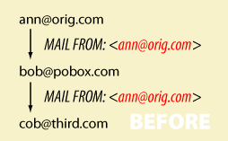

反詐騙郵件
SPF // SRS // DKIM // DMARC
環境：Ubuntu 16.04 (DigitalOcean)
SPF
SPF(Sender Policy Framework)，讓某 domain 授權特定 IP Address 代表其發信，MTA收到後會驗證該地址 domain 的 SPF 紀錄的 range 是否跟信上的 IP Address 相同，目的是在確認電子郵件確實是由網域授權的郵件伺服器寄出
/var/cache/bind/zone/db.kaiiiz.nctucs.net
1 | ; SPF record |
v=spf1：spf 所使用的版本
+：Pass
-：Fail，e.g. -all 表示除了有條列出來的主機允許其他都拒絕，標式為 Hard Fail 不會接受該信件
~：Softfail，e.g. ~all 表示除了有條列出來的主機允許其他都拒絕，標式為 Soft Fail 還是接收了該信件
?：Neutral
a, mx：表示比對 DNS 記錄中的 A 及 MX record
DNS 的架設可以參考這篇
SPF check
檢查進來的信有沒有符合 SPF
官方的教學
1 | sudo apt-get install postfix-policyd-spf-python |
/etc/postfix/main.cf
1 | # SPF |
/etc/postfix/master.cf
1 | policy-spf unix - n n - - spawn |
重啟服務
1 | sudo systemctl restart postfix |
SRS
SPF 是嘗試防範電子郵件偽造的機制，方法是查找與電子郵件 FROM: (訊息封寄件者) 位址網域相關聯的特殊 TXT 記錄。
想像一下，當你的機器 forward 別人的 mail 時，E-mail 上的 FROM: 應為原信件的 domain name

但 SPF check 查找發信的人的 DNS，會發現轉寄信的人不符合 DNS 上設定的 TXT record，因此沒有通過 SPF check
寄件者重寫機制 (SRS) 提供此問題的解決方案。SRS 使用寄件者的網域，將原始寄件者的位址封裝至新位址中。只有轉寄者自己的網域會顯露供 SPF 檢查
安裝
1 | sudo apt install postsrsd |
/etc/postfix/main.cf
1 | # PostSRSd settings. |
重啟服務
1 | sudo systemctl restart postfix |
DKIM
DKIM 的原理是用公私鑰來驗證寄件者的真偽。Public Key 放在 DNS TXT Record，而 Private Key 存放在 Server，而每封信都帶有 DKIM-Signature。這樣只要驗證 DKIM-Signature 是否和 Public key 相符就可以知道郵件的真偽。
1 | sudo apt-get install opendkim opendkim-tools |
/etc/default/opendkim
1 | SOCKET="inet:8891@localhost" |
生成 Public key 及 Private key
1 | opendkim-genkey -t -s mail -d kaiiiz.nctucs.net |
會生成出 mail.txt 及 mail.private，把 mail.txt 的內容放到 DNS 中，把 mail.private 複製到 postfix 的資料夾方便管理
1 | sudo cp mail.private /etc/postfix/dkim.key |
/etc/opendkim.conf
1 | Domain kaiiiz.nctucs.net |
DKIM check
檢查進來的信有沒有符合 DKIM
/etc/postfix/main.cf
1 | # DKIM |
重啟服務
1 | sudo systemctl restart postfix |
DMARC
使用方法很簡單，加一個 txt record 就好了
/var/cache/bind/zone/db.kaiiiz.nctucs.net
1 | ; DMARC |
DMARC check
檢查進來的信有沒有符合 DMARC
/etc/postfix/main.cf
1 | smtpd_milters = ...,inet:localhost:83682 |
重啟服務
1 | sudo systemctl restart postfix |
測試
寄一封信給 google，查看郵件原始檔，看是否有符合 SPF、DKIM、DMARC 的驗證
1 | echo "This is the body" | mutt -s "Test mail" name@mail_address |
從 google 寄信進來，看 SPF、DKIM、DMARC 有沒有 check